DELPHINE BERTRAND
visual artist
indoor landscape gardener
poetess
TEXT BY ELANA CARDIN
CURRICULUM VITAE
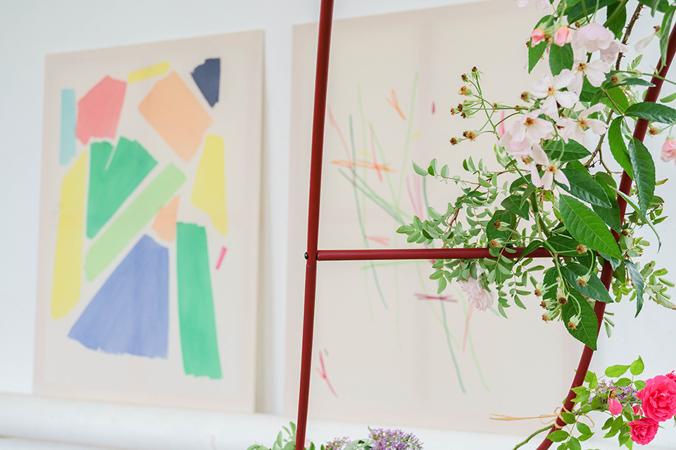
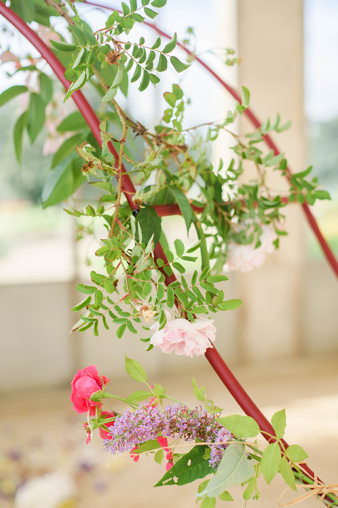
La Chance, a duo show with Kahina Loumi
Installation composed by fresh flowers and dried flowers, pearly shells and pearly shells reduced to glitter, twigs, de bulbes de cylcamen, de compost, de seaux, de rafia, painted metallic
sculptures ; paintings by Kahina Loumi
Orangerie Est, Parc du Thabor, Rennes
September 2021
Photographs : Valentin Béru
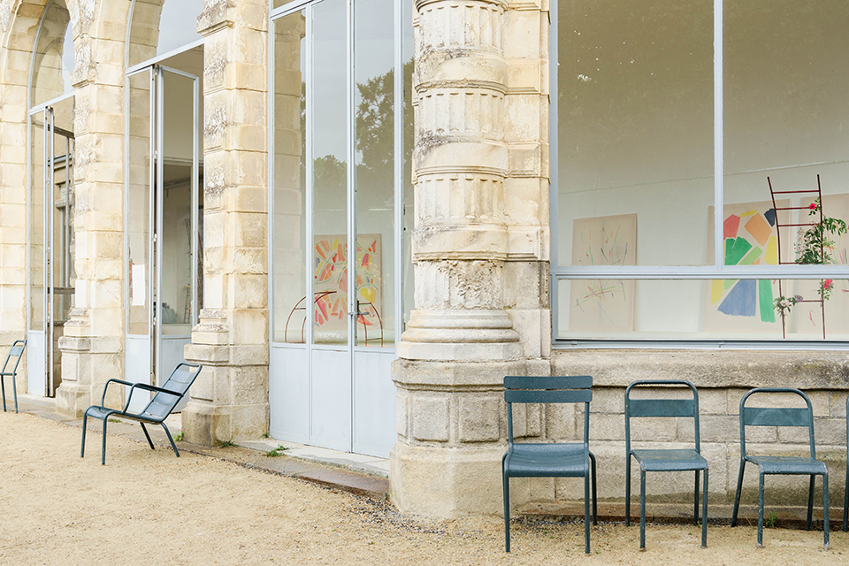
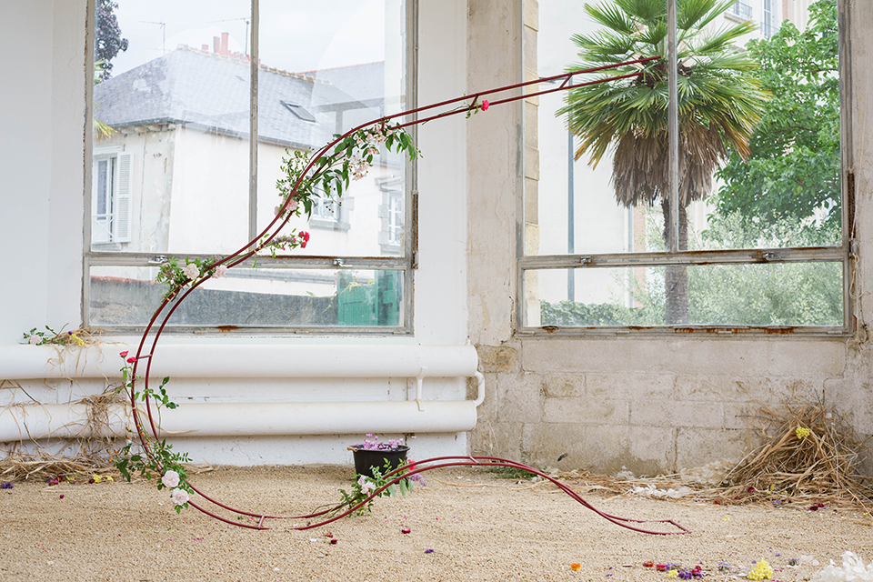
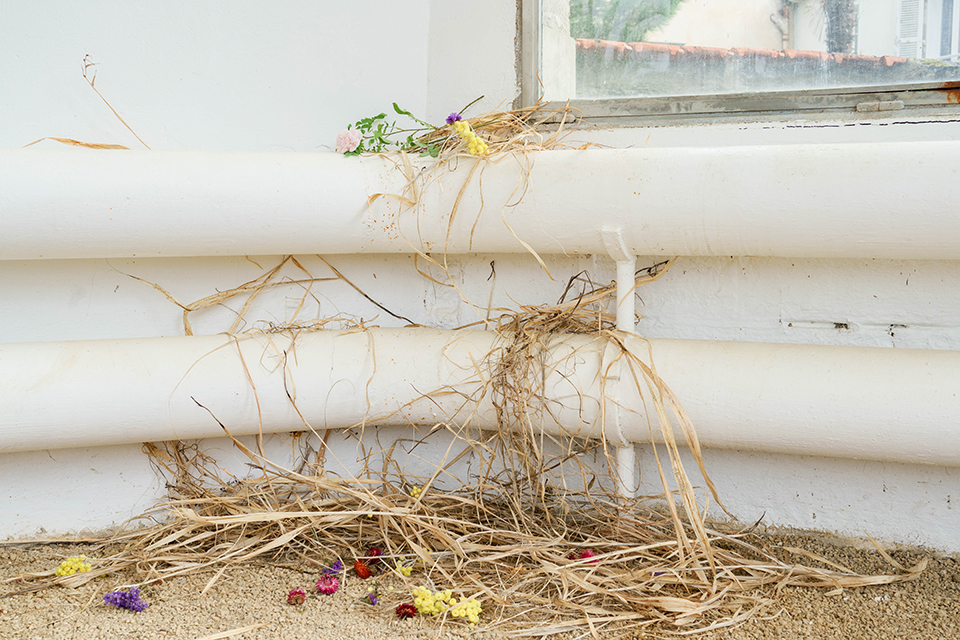
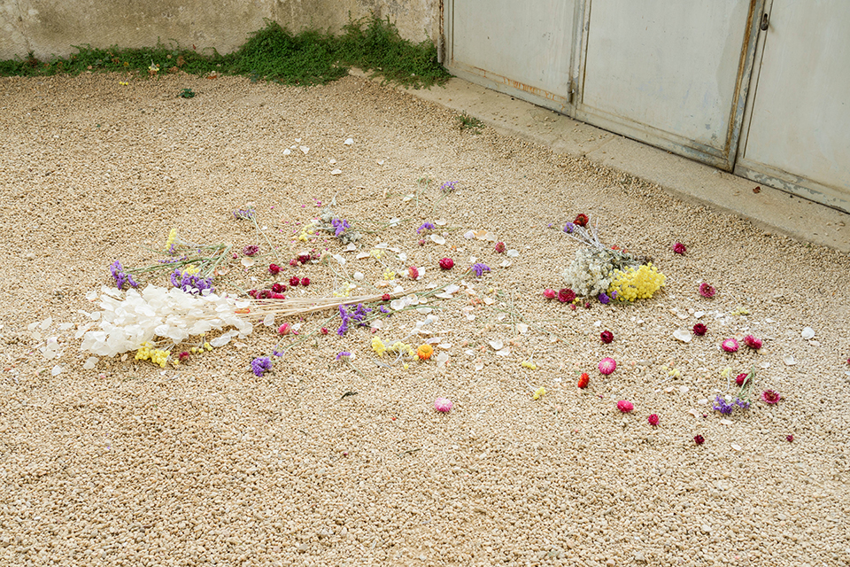
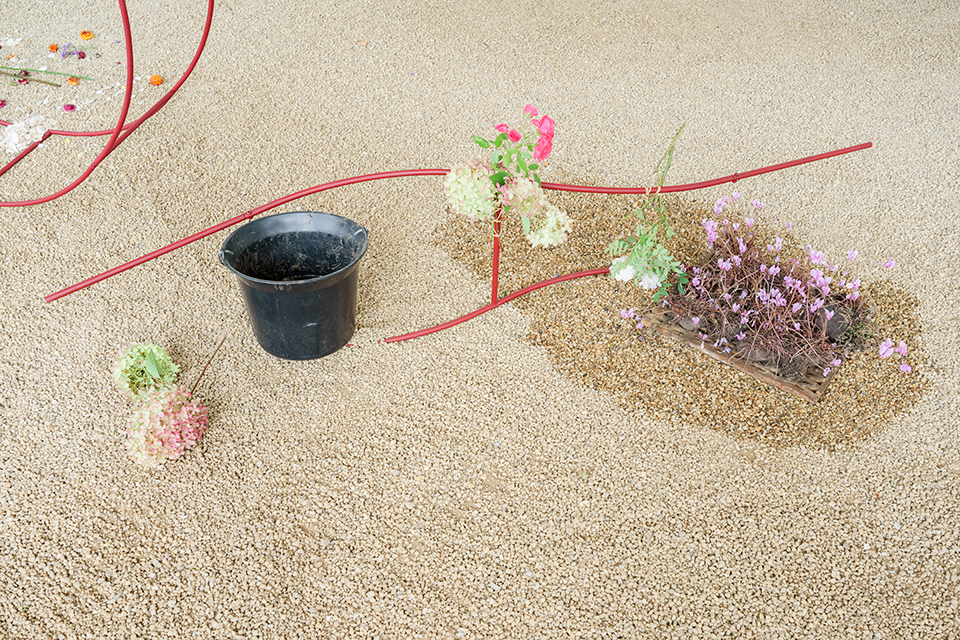
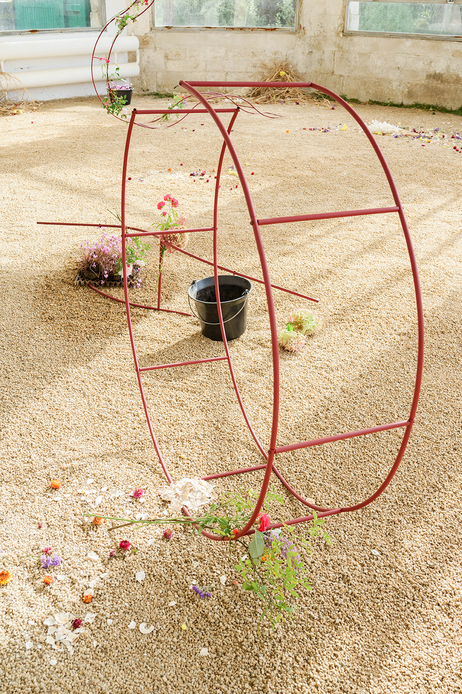
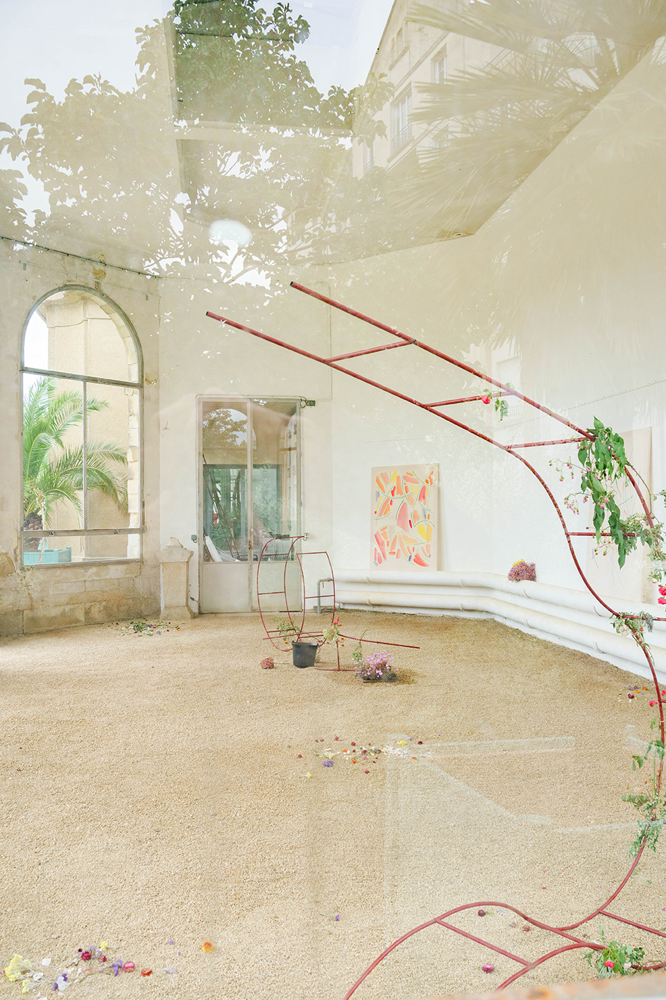
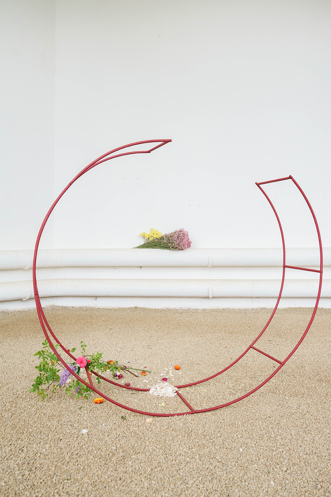
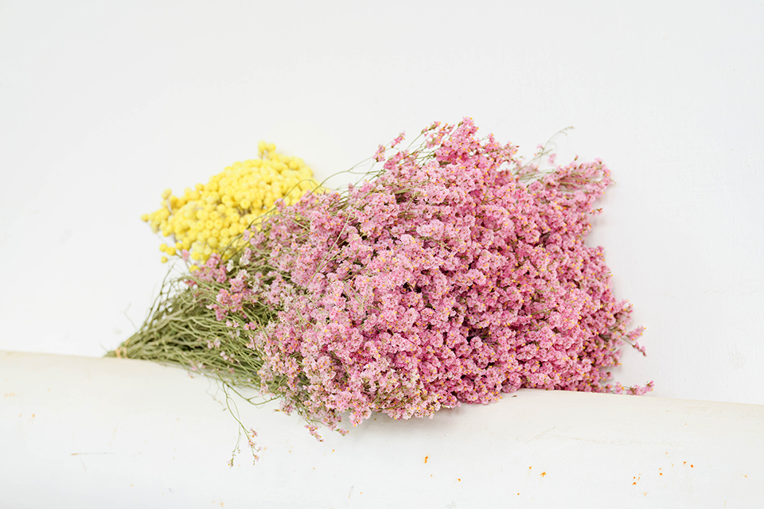